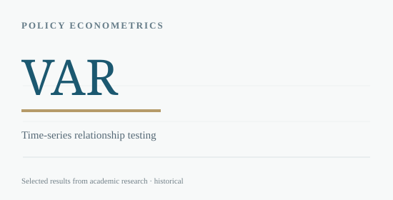

← BACK TO RESEARCH LIBRARY
Macroeconomic Research / 2025
Argentina Dollarization & Sovereign Risk
A policy event viewed through sovereign risk, real interest rates and market expectations.
USC · ECON 501Group research
THE RESEARCH QUESTION
Was Argentina’s financial response to dollarization proposals accompanied by an observable increase in the use of U.S. dollars?
Investigated Argentina’s dollarization debate through historical inflation trends, interest rates, sovereign risk and financial dollarization using ARIMA, OLS and VAR.

METHODOLOGY
How the analysis was conducted
Analyzed dollarization index, real interest rates and a sovereign risk measure in monthly data. Compared forecast patterns, regressions with a policy-period indicator and vector autoregression in changes.
KEY FINDINGS
What the evidence suggests
- The study reported pronounced shifts in real interest rates and sovereign risk after the policy announcement.
- Within the reported specifications, changes in the dollarization index did not robustly explain those financial shifts.
- The project distinguished market expectations from structural adoption of a dollarized regime.
SCOPE & LIMITATIONS
Observational student research; the policy timeline and final interpretation reflect the group paper at the time it was written, not a current assessment of Argentina.
SOURCE
Based on “The Impact of Currency Dollarization Policy on Argentina’s Economy” (ECON 501, group paper). Full academic paper available below. Third-party licensed datasets and employer materials are not redistributed.